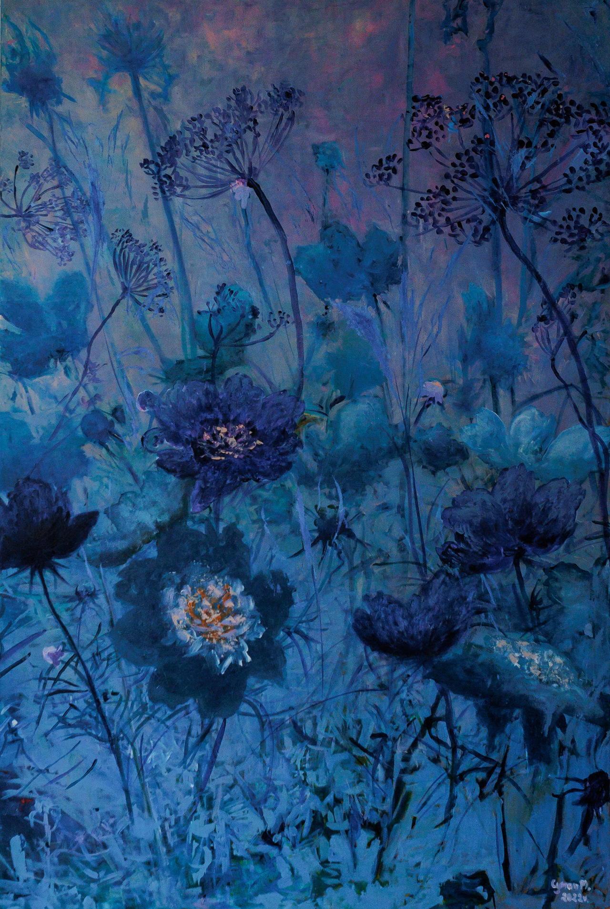
Przypomnij sobie to cudownie miękkie, drożdżowe ciasto, które wyrastało w słońcu, i ten obłędny zapach świeżych owoców unoszący się w starym, dobrym domu.
Pamiętasz tamten czas bezwzględnej beztroski? Dni, kiedy łąki mieniły się tysiącem odcieni, biegło się boso, goniąc wiatr i koniki polne, a jedynym zmartwieniem było to, jak szybko zachodzi słońce.
Ten obraz to coś więcej niż płótno – to zapach lata, który zatrzymałam na chwilę, żeby podziałać na Twoje zmysły i przenieść Cię do tamtego wymiaru czystej magii. To ciepło u boku babci, słodycz domowych konfitur i leżenie w trawie z głową w chmurach, z których układało się najpiękniejsze sny.
Choć lata lecą, te chwile wcale nie minęły bezpowrotnie. One żyją w nas, czekając, aż na nowo obudzimy je do życia. Niech ten obraz będzie Twoim kluczem. Zamknij oczy, weź głęboki oddech i wróc do domu, tam, gdzie czas nie ma żadnego znaczenia.
[Remember that wonderfully soft, yeasty dough rising in the sunlight, and the intoxicating scent of fresh fruit drifting through that good old home.
Do you remember that time of absolute carefree joy? Those days when the meadows shimmered with a thousand shades, when you ran barefoot, chasing the wind and grasshoppers, and your only worry was how quickly the sun was setting.
This painting is more than just a canvas – it is the scent of summer that I captured for a moment, allowing it to awaken your senses and carry you back to that place of pure magic. It is the warmth of being beside your grandmother, the sweetness of homemade preserves, and lying in the grass with your head in the clouds, where the most beautiful dreams took shape.
Although the years go by, those moments have never truly disappeared. They live within us, waiting for us to awaken them once again. Let this painting be your key. Close your eyes, take a deep breath, and return home – to a place where time has no meaning.]
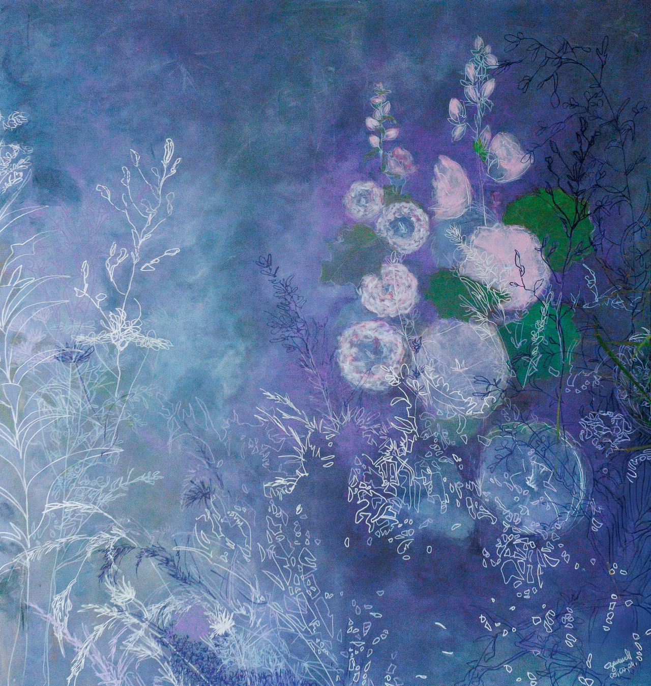
Znasz ten moment, kiedy w życiu robi się tak po prostu strasznie trudno?
Kiedy wokół jest tyle niedopowiedzianych rzeczy, że w głowie zaczyna wariować chaos, a ty tracisz grunt pod nogami. Wiem, jak to przytłacza. Ten obraz jest właśnie o tym, o tych chwilach, kiedy czujemy się zagubieni w gęstej mgle codzienności.
Ale spójrz na to proszę głębiej. Te trudne momenty to tylko zewnętrzna powłoka, taka chwilowa przykrywka. One wcale nas nie definiują. Nie są tym, kim naprawdę jesteśmy.
Więc jeśli teraz jest ci ciężko, proszę, nie trać z oczu samego siebie. Nie zatracaj się w tym zamęcie. Pamiętaj po prostu, kim jesteś pod tym wszystkim, ze swoją całą siłą i autentycznością. Poradzimy sobie z tym...
[Do you know that moment when life simply becomes incredibly difficult?
When there are so many things left unsaid that chaos begins to take over your mind, and you feel like the ground is slipping away beneath your feet. I know how overwhelming it can be. This painting is about those very moments — the times when we feel lost in the thick fog of everyday life.
But please, look a little deeper. These difficult moments are only an outer layer, a temporary veil. They do not define us. They are not who we truly are.
So if life feels heavy right now, please don't lose sight of yourself. Don't lose yourself in the confusion. Simply remember who you are beneath it all, with all your strength and authenticity. We'll get through this...]
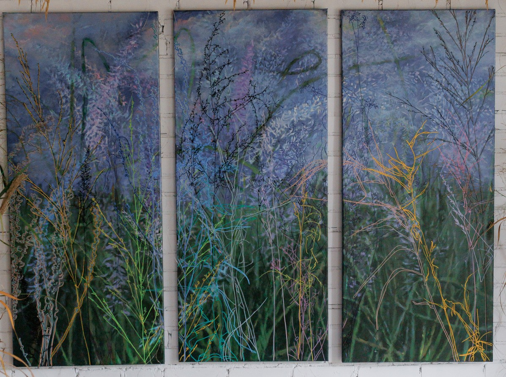
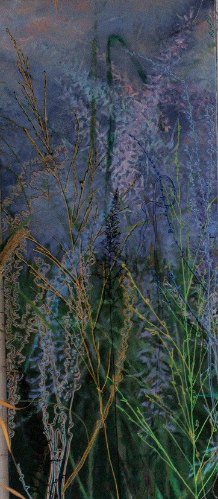
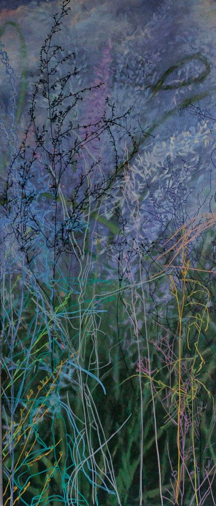
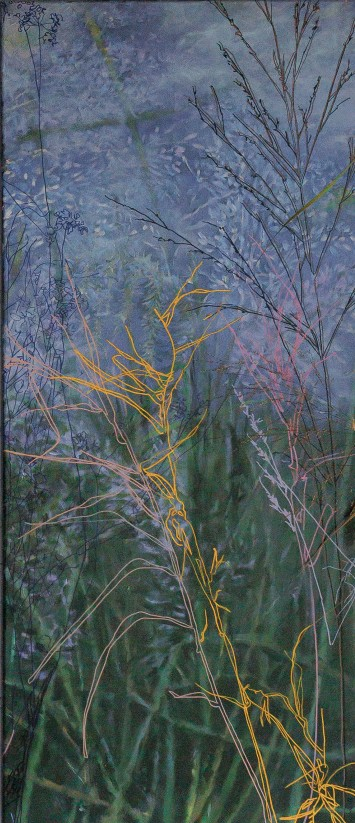
Zamknij oczy i wyobraź sobie moment, w którym świat na chwilę przestaje oddychać. Znamy to tylko z najgłębszych snów, ale ten tryptyk, mój pierwszy, jedyny taki, nad którym pracowałam z tak niesamowitym namaszczeniem – zamyka tę noc w sobie.
Nazwałam go „Eteryczny Szept Czułej Nocy”. I kiedy stajesz przed nim na żywo, nagle czujesz, jak czas gęstnieje. Te barwy nie zostały po prostu położone na płótno, one pulsują. To głęboka, aksamitna noc, która wcale nie jest ciemna; ona lśni tysiącem sekretnych odcieni fioletu, chłodnej zieleni i świetlistego pyłu.
Te rośliny, te delikatne, drżące linie nie są namalowane – one żyją. Wyglądają, jakby kołysały się pod wpływem niewidzialnego wiatru, szepcząc coś prosto do Twojej skóry. To czysta, niczym niezmącona zmysłowość. Obraz wciąga Cię w swój wymiar, staje się żywym oddechem, gęstym od magii powietrzem, które czujesz całym ciałem.
Nie ma tu przypadków. Jest za to ogrom serca, godziny zatracenia i ta niesamowita, eteryczna delikatność, która sprawia, że stojąc przed nim, po prostu zapominasz o całym świecie. Zostajesz tylko Ty, noc i ten szept, który rezonuje gdzieś głęboko w duszy.
[Close your eyes and imagine a moment when the world stops breathing for just a while. We know it only from our deepest dreams, but this triptych, my first and truly one of a kind, created with such extraordinary devotion, captures that night within itself.
I called it “Ethereal Whisper of a Tender Night.” And when you stand before it in person, you suddenly feel time becoming dense and slow. These colours were not simply placed upon the canvas — they pulse. It is a deep, velvety night that is not dark at all; instead, it shimmers with a thousand secret shades of violet, cool green, and luminous dust.
These plants, these delicate, trembling lines are not painted — they are alive. They seem to sway beneath an invisible breeze, whispering something directly against your skin. It is pure, unrestrained sensuality. The painting draws you into its own dimension, becoming a living breath, an air thick with magic that you can feel with your entire body.
There are no accidents here. Instead, there is an abundance of heart, hours of complete immersion, and that extraordinary, ethereal delicacy that makes you simply forget the entire world when standing before it. There is only you, the night, and the whisper that resonates somewhere deep within the soul.]
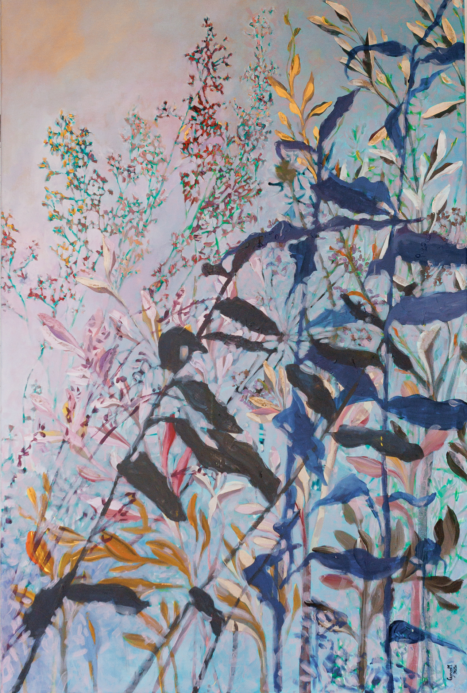
Wiesz, jak to jest, kiedy po ciężkim dniu po prostu potrzebujesz złapać oddech? Ten obraz, 'Pastelowe love', to dla mnie dokładnie to uczucie, jak ciepły kocyk, który otula, kiedy najbardziej tego potrzebujemy.
Trzeba go zobaczyć na żywo, bo te delikatne, pastelowe kolory w tle dają niesamowite wyciszenie, zrozumienie, głębszy oddech, spokój, refleksję i takie upragnione zatrzymanie.
Ale z drugiej strony mamy tu te ciemne rośliny na pierwszym planie, które pokazują coś niezwykle ważnego: to, co trudne w życiu, jest tak samo ulotne, jak to, co piękne. Życie po prostu jest i należy go doświadczać w całej jego pełni. Bo tak samo jak wszystko co złe, tak samo i wszystko co dobre, w końcu minie. Chodzi o to, żeby nie osadzać się w przeszłości, tylko zacząć żyć w teraźniejszości. Przecież przyszłość i tak mamy niepewną, więc po co na zapas się nią przejmować?
Musimy tworzyć, kreować i doświadczać każdego dnia, ale też pamiętać o tym, żeby czasem się zatrzymać, odpocząć i po prostu... być.
[Do you know what it's like when, after a long and difficult day, you simply need to catch your breath? This painting, “Pastelove Love,” is exactly that feeling to me — like a warm blanket wrapping around you when you need it most.
You really need to see it in person, because the delicate pastel colours in the background create an incredible sense of stillness, understanding, deeper breathing, peace, reflection, and that longed-for feeling of simply slowing down.
But on the other hand, we have these dark plants in the foreground, revealing something incredibly important: what is difficult in life is just as fleeting as what is beautiful. Life simply is, and we should experience it in all its fullness. Because just as everything bad eventually passes, so does everything good. The point is not to remain anchored in the past, but to begin living in the present. After all, the future is uncertain anyway, so why worry about it in advance?
We must create, shape, and experience every day, but we also need to remember to pause sometimes, rest, and simply... be.]
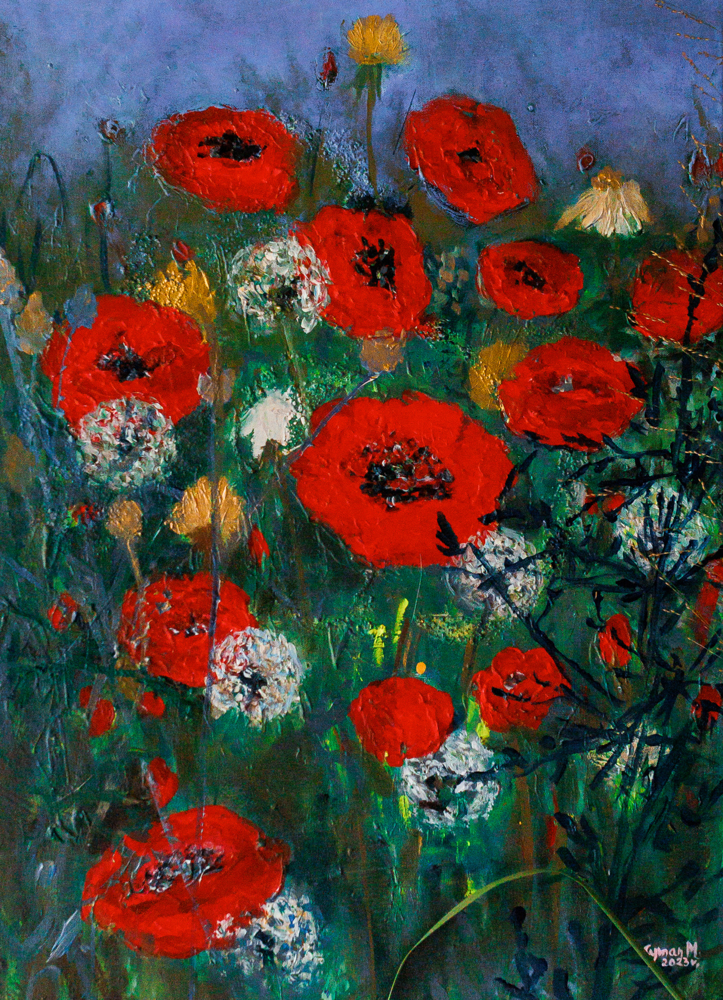
Posłuchaj, muszę Ci pokazać ten mały, absolutnie wyjątkowy obraz. Gdy na niego patrzę, przenoszę się do zupełnie innego wymiaru, do świata czystej bajki, szczęścia i tego zapomnianego, dziecięcego zachwytu, kiedy czas po prostu się zatrzymywał.
To opowieść o cudownych makach, które otulają duszę dając niesamowity spokój i głębokie wyciszenie. Pamiętasz to uczucie, kiedy pola były dosłownie usiane czerwienią, a w powietrzu słychać było to ciche, magiczne cykanie makówek? Każdy podmuch wiatru poruszał nimi w tak niezwykłym, delikatnym tańcu, jakby na ich płatkach krążyły niewidzialne dla oczu wróżki. Można było poczuć całą sobą ich ciepłą energię, uśmiechnąć się do słońca i po prostu zachłysnąć się pięknem.
Ten obraz to dokładnie ten moment. Iskra radości, która sprawia, że znów stajemy się dzieckiem, dla którego świat jest pełen magii, a każda chwila smakuje jak najpiękniejsza baśń.
[Listen, I have to show you this small, absolutely extraordinary painting. Whenever I look at it, I am transported to a completely different dimension, to a world of pure fairy tale, happiness, and that forgotten sense of childlike wonder, when time simply seemed to stand still.
It is a story about magnificent poppies that gently embrace the soul, bringing an incredible sense of peace and deep tranquillity. Do you remember the feeling when the fields were literally covered in red, and the air seemed to carry the quiet, magical rustling of poppy seed heads? Every breeze made them sway in such an extraordinary, delicate dance, as though invisible fairies were circling upon their petals. You could feel their warm energy with your whole being, smile at the sun, and simply become intoxicated by the beauty.
This painting captures exactly that moment. A spark of joy that makes us children once again, when the world is full of magic and every moment tastes like the most beautiful fairy tale.]
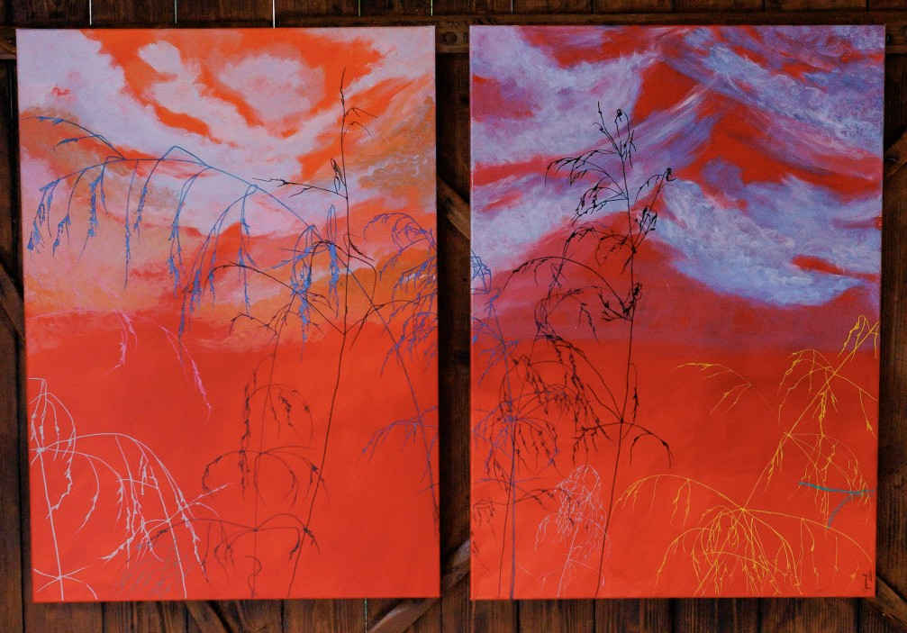
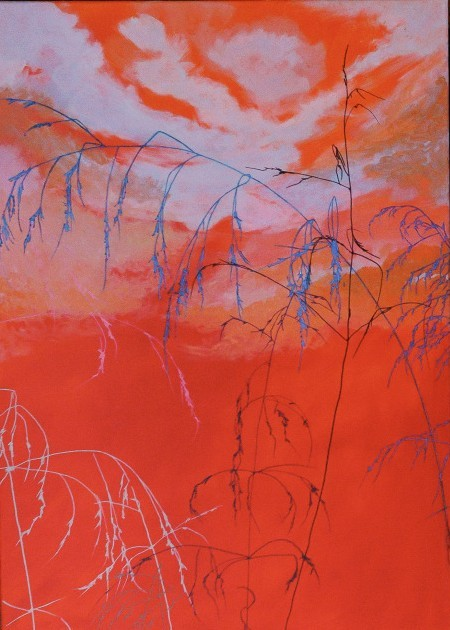
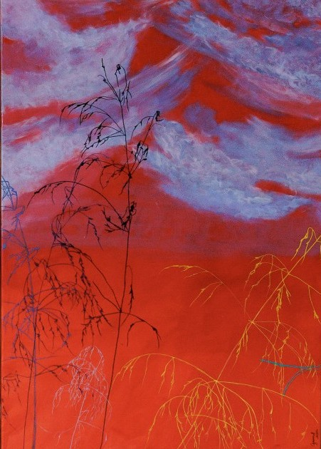
Słuchaj, chcę Ci pokazać obraz o nazwie 'Autentyczność'. Zależało mi w nim na pokazaniu takiej całkowicie nieprzerysowanej formy tego, jak naprawdę się czujemy. To przypomnienie, że pierwotne zamysły są często najlepszym wyborem i że nie trzeba wiele, żeby po prostu... być.
Bo nie oszukujmy się, sami w sobie jesteśmy wyjątkowi. Każdy z nas ma w sobie iskrę boskości, każdy z nas jest naprawdę cudowny. Już samo to, że jesteśmy, że istniejemy, jest niezwykłe. Ale tak często o tym zapominamy. Tak często gasimy własne światło i własne kolory, chcąc się dopasować i żyć w zgodzie z oczekiwaniami innych, odwracając się tak naprawdę od samych siebie. Tak bardzo chcemy się nie wychylać, boimy się opinii ludzi i w tym wszystkim się zatracamy. Nakładamy na siebie tyle warstw, że w pewnym momencie przestajemy wiedzieć, gdzie ukrywa się nasza prawdziwa autentyczność.
A przecież nie musisz być przerysowana. Nie musisz się do niczego dopasowywać. Po prostu bądź – delikatna w swojej istocie, wyjątkowa już w samym fakcie, że żyjesz. To jest tak piękne, cudowne i w pełni wystarczające. Już samo to, że jesteś.
[Listen, I want to show you a painting called “Authenticity.” With this piece, I wanted to capture a completely unembellished expression of how we truly feel. It is a reminder that our original instincts are often the best choice, and that we don't need much to simply... be.
Because, let's be honest, we are extraordinary just as we are. Each of us carries a spark of something divine within, and each of us is truly wonderful. The simple fact that we are here, that we exist, is extraordinary. Yet we so often forget this. So often, we dim our own light and our own colours, trying to fit in and live according to other people's expectations, turning away from ourselves in the process. We are so afraid of standing out, so afraid of other people's opinions, that somewhere along the way, we lose ourselves. We put so many layers upon ourselves that, at some point, we no longer know where our true authenticity is hiding.
But you don't have to be exaggerated or try to be something you're not. You don't have to fit into anything. Simply be — gentle in your essence, extraordinary simply because you are alive. That is beautiful, wonderful, and more than enough. The simple fact that you are here.]
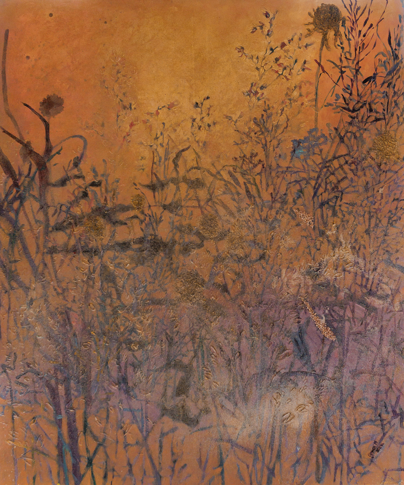
Cześć! Chcę Ci pokazać „W świetle słońca ”, który jest dla mnie czystą formą zabawy, doświadczania i takim dowodem na to, że nasza osobowość potrafi zaskoczyć, nawet nas samych. Różne sytuacje w życiu pokazują przeróżne części nas, a autentyczność jest czymś niesamowitym i wyjątkowym.
Specjalnie nałożyłam na ten obraz brokat, chciałam żeby przekaz był mocny i pokazywał, że każdy z nas przyszedł na ten świat po coś ważnego. Każdy z nas ma w sobie coś wspaniałego i niepowtarzalnego. I tak jak z tym dziełem, kiedy słońce pada na drobinki brokatu, staje się ono czymś niezwykłym, a kiedy wisi w cieniu, wygląda jak zwykły obraz.
Z nami jest dokładnie tak samo. Kiedy mamy wokół siebie środowisko, które nam sprzyja, które pozwala nam się rozwijać i wzrastać, świecimy pełnym blaskiem. Ale bywa też tak, że trafiamy na miejsca i ludzi, którzy nas gaszą.
Najważniejsze to wtedy nie poddawać się, czuć siebie i kreować z pozycji własnego serca. Nie chodzi o to, żeby obrastać w piórka, ale o to, by nigdy nie pozwalać nikomu gasić naszego światła. Żeby pamiętać, że to my znamy siebie najlepiej i to nasze zdanie liczy się najbardziej.
Mi też w życiu nie było łatwo. Pomimo to się nie poddaję, i tak jak wielu ludzi we mnie nie wierzyło, tak ja uczę się każdego dnia wierzyć w samą siebie, stawiać na siebie i kochać siebie bezwarunkowo. Przekazuję to dalej, żeby pokazać, że naprawdę się da. Walcz o siebie, bądź sobą, nie daj gasić swojego światła, rób to, co kochasz i po prostu bądź szczęśliwa/y.
[Hi! I want to show you “In the Light of the Sun,” a painting that, for me, is a pure form of play, exploration, and a reminder that our personality can surprise even us. Different situations in life reveal different parts of who we are, and authenticity is something truly extraordinary and unique.
I deliberately added glitter to this painting because I wanted its message to be powerful — to show that every one of us came into this world for something meaningful. Each of us carries something wonderful and completely unique within. And just like with this artwork, when sunlight falls upon the tiny glitter particles, it becomes something extraordinary; when it hangs in the shade, it looks like an ordinary painting.
It is exactly the same with us. When we surround ourselves with an environment that supports us, one that allows us to develop and grow, we shine with our full brilliance. But sometimes we find ourselves in places and among people who dim our light.
The most important thing then is not to give up, to stay connected with yourself, and to create from a place of authenticity and from the heart. It is not about becoming full of yourself, but about never allowing anyone to dim your light. About remembering that we know ourselves best, and that our own voice matters most.
Life hasn't always been easy for me either. Despite that, I refuse to give up. Just as many people once didn't believe in me, I am learning every day to believe in myself, to choose myself, and to love myself unconditionally. I pass this message on to others to show that it really is possible. Stand up for yourself, be yourself, don't let anyone dim your light, do what you love, and simply be happy.]
Wszelkie materiały, dzieła, zdjęcia, grafiki, teksty oraz inne treści prezentowane w niniejszym serwisie stanowią wyłączną własność Magdaleny Cyman i są chronione prawem autorskim oraz przepisami o ochronie własności intelektualnej.
Kopiowanie, zwielokrotnianie, rozpowszechnianie, modyfikowanie lub jakiekolwiek inne wykorzystywanie prezentowanych materiałów w całości lub w części, bez uprzedniej pisemnej zgody Magdaleny Cyman, jest surowo zabronione.
[All materials, artworks, photographs, graphics, texts, and other content presented on this website are the exclusive property of Magdalena Cyman and are protected by copyright and intellectual property laws.
Copying, reproducing, distributing, modifying, or otherwise using any of the presented materials, in whole or in part, without the prior written consent of Magdalena Cyman, is strictly prohibited.]